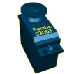
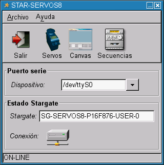
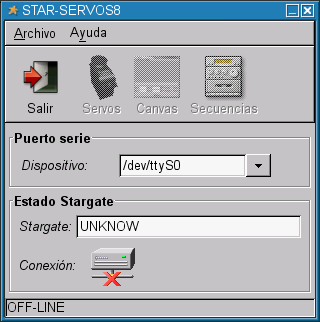
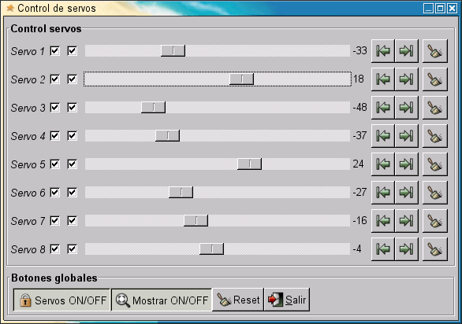
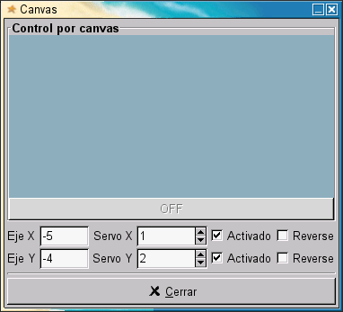
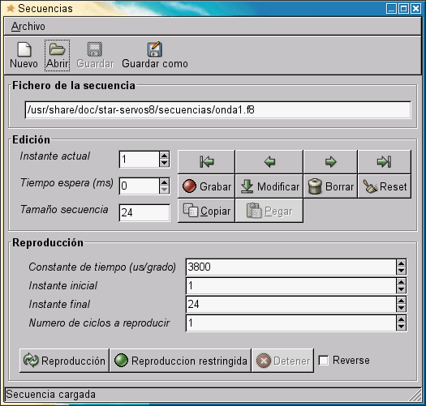

|
STAR-SERVOS8: CONTROL DE SERVOS DESDE EL PC |
|
 |
|
Cuando se están desarrollando prototipos de robots articulados, como PuchoBot, Cube Revolutions o Sheila, resulta muy útil poder controlar los servos desde el PC, utilizando una interfaz gráfica. De esta forma se pueden definir secuencias sencillas de movimiento sin tener que programar ningún microcontrolador y así poder validar la estructura mecánica o el diseño del robot.
El programa star-servos8 permite manejar hasta 8 servos del tipo Futaba 3003 o compatibles. El posicionamiento se puede hacer mediante barras de desplazamiento o usando un canvas. De una manera muy sencilla se pueden grabar las posiciones de los servos para generar secuencias de movimiento, que se pueden grabar en un fichero para recuperarlas posteriormente.
Esta aplicación forma parte del proyecto Stargate, y es un cliente para el servidor servos8.
Plataforma: Linux
Librerías gráficas: GTK2
Lenguaje: C
Dependencias: libstargate 1.0.1, además de las GTK2
Licencia: GPL
Este programa se distribuye bajo licencia GPL
Los servos se conectan a una placa con un microcontrolador (Stargate), y se graba el servidor servos8. Los microcontroladores soportados actualmente son: PIC16F87X, 68HC11 y 68HC08. El usuario puede fabricarse su propia placa o bien utilizar alguna de las siguientes, en las que se ha probado su funcionamiento:
Tarjeta Skypic. La conexión de los servos es inmediata, ya que dispone de conectores específicos. Se trata de hardware libre y por tanto todos lo esquemas están disponibles.
Tarjeta CT6811. Para conectar los servos hay que utilizar una plaquita que tenga conectores de servos por un lado y conector para cable plano de bus por otro. También es hardware libre.
Tarjeta GPBOT. Hay que construirse también una plaquita de adaptación. Esta placa NO es hardware libre.
El Stargate se conecta al PC a través de un cable serie.
|
 |
 |
|---|---|
|
Ventana inicial, que da acceso al resto de ventanas de control. Permite configurar el dispositivo serie en el que está conectado el stargate. Muestra en todo comento el identificador del stargate y el estado de la conexión. |
En todo momento se está comprobando la conexión con el stargate. Si se desconecta se indica. |
|
 |
|---|
|
Ventana principal para el posicionamiento de servos. Movimiento con el raton cada una de las barras deslizante, se actúa sobre cada uno de los servos. Se pueden habilitar/deshabilitar los servos marcando las casillas de la izquierda. El botón de Reset lleva a todos los servos a la posición inicial. |
|
 |
|---|
|
Ventana de control por canvas. Moviendo el ratón por la zona azul se actúa sobre los dos servos asociados. En este ejemplo, el servo 1 se controla con el eje X y el servo 2 con el Y. Se pueden habrir tantas ventanas de control por canvas como se quiera. Este tipo de control resulta especialmente últil cuando se está moviendo una cámara con dos grados de libertad. |
|
 |
|---|
|
Ventana de grabación de secuencias. En cada instante se puede grabar una posición de los servos (similar a los “fotogramas” en el mundo de la animación). Mediante los botones de edición podemos recorrer todos los instantes. Pulsando el botón de reproducción ejecutamos la secuencia de movimiento grabada. Estas secuencias se pueden grabar en ficheros para luego leerlos posteriormente. |
Aquí se puede ver un pantallazo final el programa star-servos8 funcioando en un escritorio Gnome, en un portátil con Debian/Sarge.
|
Ultima versión (1.0) |
|
Paquete para Debian/Sarge. Necesario instalar previamente la libstargate-1.0.1. |
|
|
Fuentes |
|
|
Paquete fuente para Debian/Sarge (Ficheros *orig.tar.gz, *.dsc y *.diff) |
Debian/Sarge
Instalar primero la librería libstargate 1.0.1. Para ello descargar el paquete para Debian/Sarge y ejecutar:
Descargar el paquete del star-servos8 para Debian/Sarge y teclear:
Teclar star-servos8 para ejecutarlo
Otras distribuciones
No hay paquetes creados para otras distribuciones. Hay que compilar el paquete fuente:
Compilar e instalar la libstargate 1.0.1
Bajar y descomprimir el paquete star-servos8-1.0.tar.gz
$ tar vzxf star-servos8-1.0.tar.gz
Entrar en el directorio
$ cd star-servos8-1.0
Ejecutar: ./configure
Si todo ha ido bien, compilar: make
Instalar con : make install
Proyecto Stargate: Página principal del proyecto
libstargate 1.0: Librería para hacer clientes para Stargates
12/Enero/2005: Publicada versión 1.0
{kind=link}